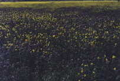

Il miele di millefiori deriva da nettari anche molto diversi tra loro, che possono variare non solo in base alle zone goegrafiche, ma anche in conseguenza dell'andamento climatico stagionale. Normalmente il sapore è dolce e gradevole. A volte qualche essenza, anche se presente in piccole quantità, dà sensazioni gustative particolari. Assume colorazioni differenti a seconda del periodo di produzione. Dalle fioriture primaverili si ottengono mieli più chiari, con meno sali minerali; con le fioriture estive mieli più scuri, in conseguenza anche alla presenza di melate. Tende a cristallizzare dopo qualche mese dalla data di produzione.